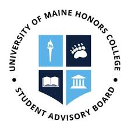
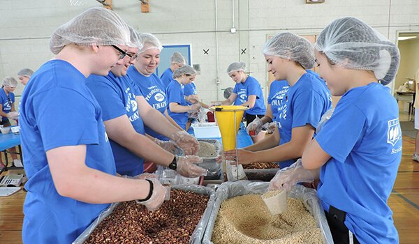
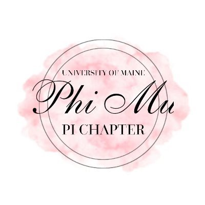
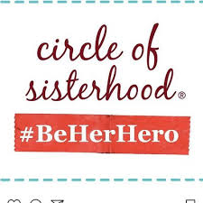
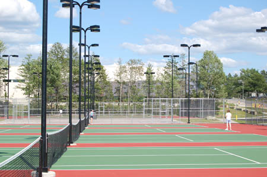

Here at the University of Maine, I've involved myself in numerous clubs and extracurriculars!
Currently, I'm involved in:

Honors Student Advisory Board
I help the create programs and events for fellow Honors College students, in the hopes of maintaining an active Honors community.

Maine Day Meal Packout Committee
I assist with the planning, fundraising, and creation of the Maine Day Meal Packout. This is a community service event in which volunteers spend the day packing meals for foodbanks in Maine. The goal of the event is to reduce food insecurity in Maine. Additionally, I was a Team Leader for Spring 2019. Meaning, that I lead an entire team of volunteers through the packing process.

Phi Mu Sorority
In my sorority, I'm a member of both the Philanthropy and Academic Committees. Last semester, Spring 2019, I was Philanthropy Chairwoman for Phi Mu. Meaning, I created and implemented events to either raise money for our philanthropy (Children's Miracle Network Hospital) or to provide an opportunity for sister's to volunteer in the community

Circle of Sisterhood
I help assist with the planning, fundraising, and creation of events for the philanthropic endevor, Circle of Sisterhood. The purpose of this organization is to raise money to aid in empowering women and girls around the world through education. Donations assist with costs, such as school supplies, clothes, etc.
Her Campus
This is an online magazine aimed towards female college students. I write various types of articles for the UMaine Chapter of Her Campus.

Tennis Club
While I'm not the greatest player, I enjoy participating in the Tennis Club. Despite never playing before, the entire club is extremely welcoming and encourages all ability levels to join, from pros to first-timers. We meet three times during the weekdays, and one day during the weekend.